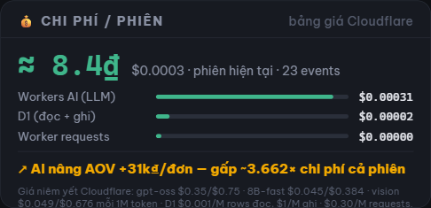
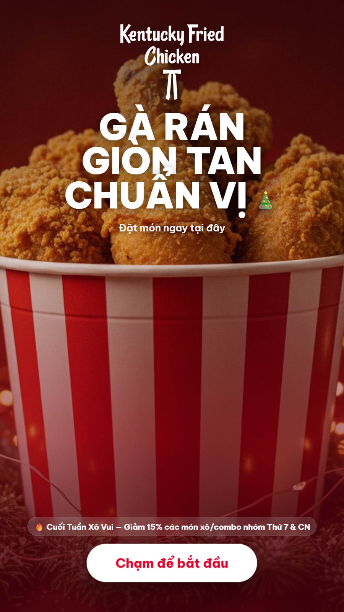
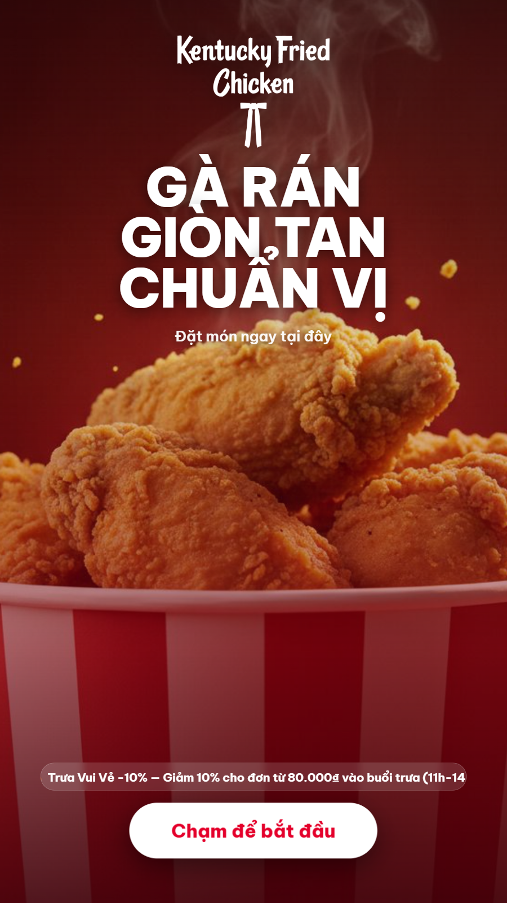

An agent that sells like your best staff member — it raises order value by earning trust first, for 13₫ of AI per customer.
Team Sanhvo · Agentic AI Build Week 2026 · F&B Track (KFC · P2 + P4)
🔴 LIVE: kfc-kiosk-agent.gentle-sky-3b0e.workers.dev
Learning #1 — from the data: 250 stores are not one store. Basket patterns split hard by site type (mall / office / residential / tourist), hour, holiday and live inventory.
Learning #2 — from psychology: kiosk upsell fails when it feels like a slot machine. Customers are time-pressed; trust is the only durable growth lever — so the agent saves them money before it sells.
Raise this session’s order value without breaking trust. Triggered by the session itself — no prompt, no chat.
session_start → agent wakesBuilds a customer hypothesis (camera glance + every tap + live cart) and picks a strategy per slot: cross-subsidy? swap? decoy? complete-the-meal? or stop selling.
vision + 8B refine · 8-signal scorerChooses its own data & tools: cluster POS pairs, store inventory, promo calendar, profile store, gpt-oss pitch writer; ordering agent wields 9 D1-grounded tools.
D1 batch ~70ms · Workers AIInjects decisions into the native journey: savings flag, drink-led ADD ON, money-saving swap, festive re-skin. Places orders, applies vouchers, hands off to humans.
preemptive: computed before the screen opensLogs impression → accept → order; computes an honest AOV counterfactual. LLM slow? Falls back to deterministic copy. Never suggests what a store can’t serve.
self-checks + live telemetryDecisions the agent makes by itself: which psychology play per slotoffer the cheaper swap firststop selling when the meal is completepush overstock / protect stockoutsescalate to a human
AOV with AI vs without
(+28.000₫/order — logged counterfactual)
of AI suggestions accepted
every impression & accept logged
infra cost per session — ≈2,200× ROI
Cloudflare list prices, itemized live


0–10s Goal: a customer walks up · 10–20s Trigger: one glance + first taps → hypothesis · 20–45s Agent acts: picks strategy, drink leads, swap saves 12.000₫ · 45–55s Outcome: bigger basket, happier customer · 55–60s Proof: +15% AOV at 13₫/session

Try it now: kfc-kiosk-agent.gentle-sky-3b0e.workers.dev
TinyFish · OpenAI gpt-oss-120b on Cloudflare Workers AI · Cloudflare Workers/D1 · Gemini · Langfuse-ready